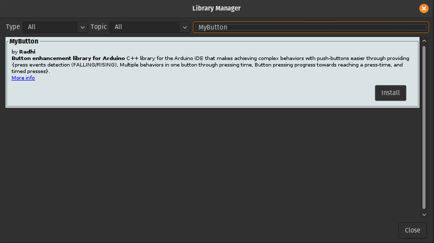
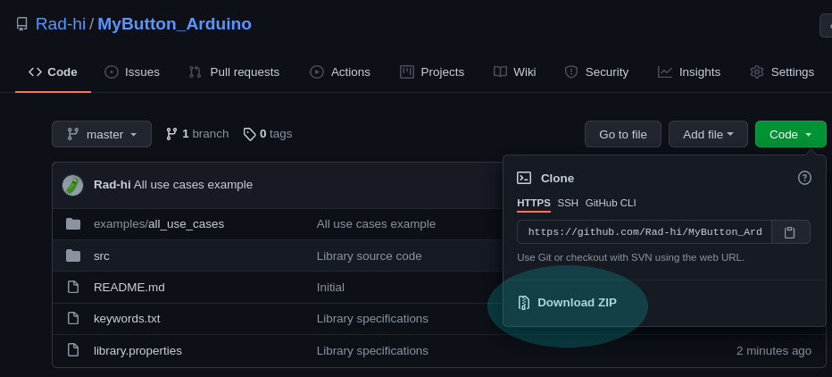

Getting started with MyButton library¶
MyButton was originally created to make interacting with push-buttons easier for makers of interactive embedded projects. Down the line, it was extended with a second library MyCountingButton, which is dedicated for counting presses and interactions that are linked with counting presses in general.
If you have a project that has push-botton(s) in it, or are thinking of one, and would like to make the interactions with this project a bit more polished and complex, whilst not having to deal with the problems that arise from working with push-buttons, such as bouncing, then MyButton was made for you!
Check the source code from here: https://github.com/Rad-hi/MyButton_Arduino
1. How to install ?¶
1.1. Through the Arduino Library manager:¶
Go to tools -> Manage Libraries… -> type MyButton and as shown in the picture below, you’ll find the MyButton library.
{kind=link}
1.2. Direct download/import:¶
{kind=link}
Click on Download ZIP to download the library, place the unzipped folder into your libraries folder in your arduinosketchfolder/libraries/PUT_HERE**(on Windows, this is likely to be under **Documents/Arduino/libraries, on linux this is under home/Arduino/libraries). You may need to create the libraries subfolder if its your first library. Now, restart the IDE.
2. What’s next?¶
For individual documentations for each of the libraries (methods, how to use, objects, code examples, …), Go to the MyButton/MyCountingButton pages.